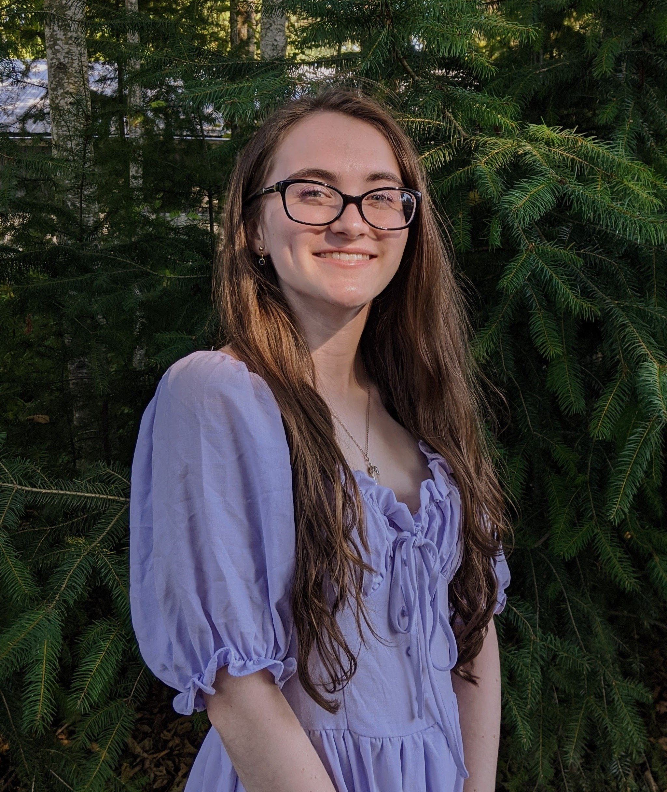

Hello there!
My name is Natalie Roy! I use she/her pronouns and I'm currently a sophomore at University of Washington Seattle pursuing a degree in Geography Data Science. I also have interest in web development, graphic design, and UI/UX development.
Click on the tabs to learn more about my work! :)
About me
I grew up in Bremerton, Washington and graduated from Central Kitsap High School in 2019. I am a first generation college student and participated in Running Start in high school, earning an Associate's degree alongside my high school degree. I'm in the process of earning my Bachelors degree at UW Seattle. I have a strong passion for accessibility and diversity, and I have career goals of working somewhere in information technology.
This Website
This website was programmed entirely by me in the Summer of 2020 and was last updated on 12/27/20.
The website is scalable and works for devices of any screen. Alt text descriptions have been written for all images for screenreaders and any other purposes. If anything on this website needs to be changed for improved accessibility, please message me and I will implement it as best as I can!